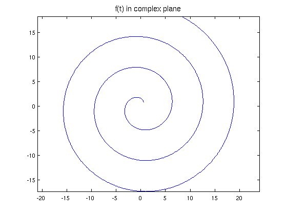
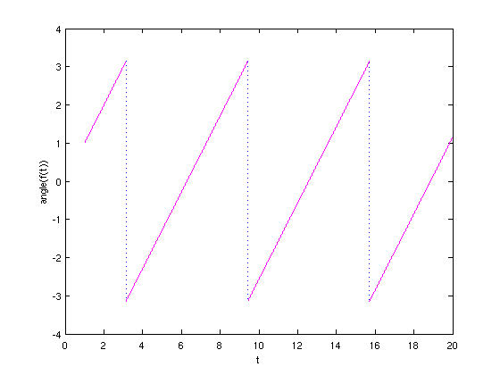
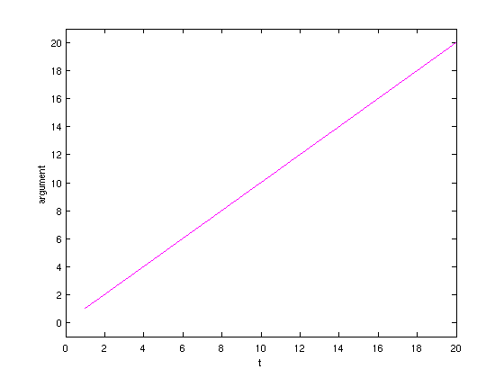
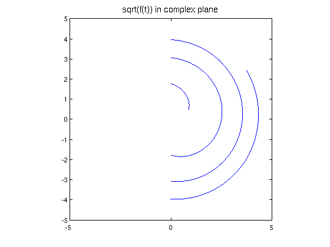
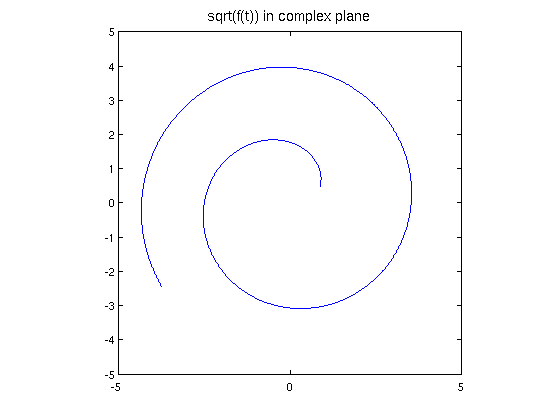

ANGLE, UNWRAP, and branches of complex chebfuns
Nick Trefethen, May 2011
(Chebfun example complex/Arguments.m)
A complex number z has a modulus or absolute value in [0,infty), which Matlab computes with ABS(z), and an argument in (-pi,pi], which Matlab computes with ANGLE(z). For example:
angle(1)
ans =
0
angle(-1)
ans = 3.141592653589793
angle(-1-.01i)
ans = -3.131592986903128
Chebfun overloads the ANGLE command in the obvious fashion, analogous to CEIL, FLOOR, and ROUND. For example, here is a spiral in the complex plane:
LW = 'linewidth'; lw = 1.6; FS = 'fontsize'; fs = 14; t = chebfun('t',[1 20]); f = t.*exp(1i*t); plot(f,LW,lw), axis equal title('f(t) in complex plane',FS,fs)
And here is its angle:
plot(angle(f),'m',LW,lw) xlabel t, ylabel angle(f(t))
Often one would prefer to define a continuous argument, and for this purpose Matlab has the command UNWRAP. For example:
unwrap(angle([-1 -1-.01i]))
ans = 3.141592653589793 3.151592320276458
If we apply the Chebfun overload, we get a continuous argument for that spiral that makes more sense:
plot(unwrap(angle(f)),'m',LW,lw), ylim([-1 21]) xlabel t, ylabel argument
An important area of application of these commands is to functions in the complex plane, where keeping track of branch cuts is often a headache. For example, suppose we want to take the square root of that function f. The result is not very useful. (For the moment we have to construct the function again with 'splitting on' to make this experiment work, though in principle Chebfun should be clever enough to introduce a breakpoint without splitting on.)
g = chebfun('sqrt(t.*exp(1i*t))',[1 20],'splitting','on'); plot(g,LW,lw), axis(5*[-1 1 -1 1]), axis square title('sqrt(f(t)) in complex plane',FS,fs)
We can get the right effect with UNWRAP:
g = sqrt(abs(f)).*exp(.5i*unwrap(angle(f))); plot(g,LW,lw), axis(5*[-1 1 -1 1]), axis square title('sqrt(f(t)) in complex plane',FS,fs)